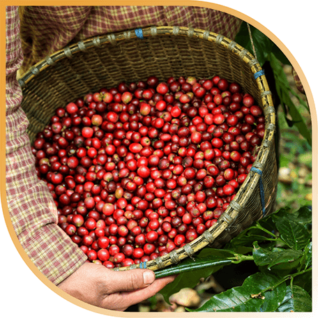
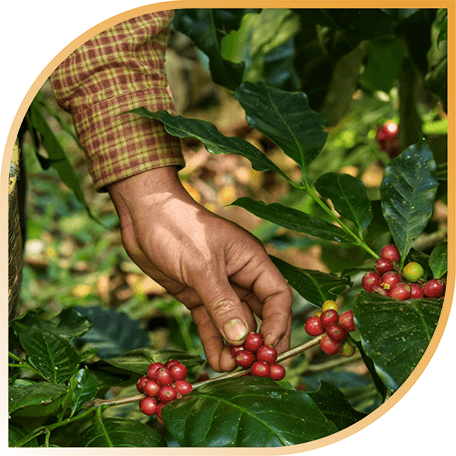

| LOẠI CÀ PHÊ | MÔ TẢ | 20KG | 10KG | 5KG |
|---|---|---|---|---|
| CỔ ĐIỂN (100% ROBUSTA RANG ĐẬM) | Gu cà phê Việt, đậm đà, đắng mạnh, nhiều caffeine. Phù hợp cà phê đen pha phin. | 320.000 | 260.000 | 180.000 |
| TRUYỀN THỐNG (100% ROBUSTA RANG VỪA) | Vị đắng vừa, nhiều caffeine nhưng nhẹ hơn rang đậm. Phù hợp cà phê đen và sữa. | 800.000 | 400.000 | 200.000 |
| HIỆN ĐẠI (80% ROBUSTA + 20% ARABICA) | Vị đắng dịu nhẹ, có chút thanh chua, hương thơm đa dạng. Phù hợp cà phê sữa pha máy. | 256.000 | 212.000 | 160.000 |
| XU HƯỚNG (100% ARABICA RANG ĐẬM) | Đậm vị, nhiều hương thơm, ít caffeine. Phù hợp espresso, americano, cà phê sữa. | 370.000 | 350.000 | 323.000 |
| TINH TẾ (100% ARABICA CẦU ĐẤT RANG NHẸ) | Thơm nhiều, ít đắng, hậu ngọt trái cây. Phù hợp Cold Brew, Pour Over. | 609.000 | 480.000 | 230.000 |

